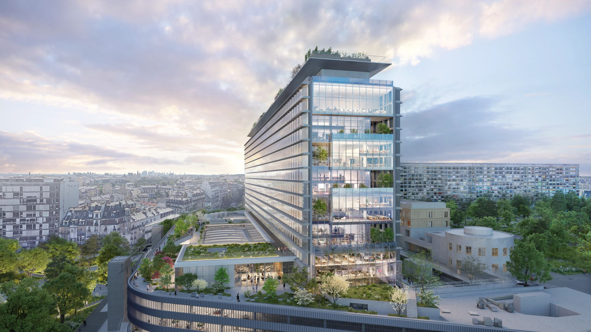

UPPER MONTPARNASSE

The adaptive reuse of Upper Montparnasse - a heroically scaled 16-story modernist office block situated above the Gare Montparnasse in Paris - will better connect the building to outdoor space and landscape, improve its energy efficiency and natural daylight, and increase public access while celebrating its enormous scale and breathtaking 360-degree views.
The existing Maine-Montparnasse Transit Hub development, spanning Boulevard du Montparnasse and Boulevard Pasteur, was a new type of urbanism in the 1960s. It was a radially integrated, overlapping cluster of programs, public spaces, and transit infrastructure boldly inserted into Paris’ Left Bank as the new modern-city intersection. However, its heroically scaled architecture blocked the historic city from view for arriving train passengers—as if a billboard announcing a hopeful, modernist future. Yet its promise of the connected city has not been realized. Instead of a vitality born from density, commute, and functional mix, much of the site is underused and unloved. The public Jardin Atlantique is out of sight and out of mind, circulation through and around the site is disorienting, and leasable spaces are outdated and undesirable to contemporary tenants.
With half a century of reflection on this site and the opportunity to imagine a new future, its original ambitions still feel as relevant as ever. The sustainable city of the 21st century must embrace mass transit, celebrate public space, promote walkability through density, and link the workplace to the public realm. As the central building within the Maine-Montparnasse development, renovating the existing CNP Assurances building will catalyze this vision and the ambitions of the master plan and surrounding new developments, bringing transit, public space, and workspace into a new equilibrium.
Both iconic and unnoticed, the existing building’s heroically-scaled architecture is a modernist paradox that must undergo radical surgery to become relevant again. As business models change and the future of work remains uncertain, the most enduring investments in the building will be those that enhance its natural assets.
The renovation proposal focuses on improving proximity and connectivity to outdoor spaces and landscape, upgrading the building's energy efficiency and lighting, and celebrating its enormous scale and breathtaking 360-degree views. The existing low-ceiling, single-story reception zone expands into a three-story super lobby and connects to a new train station rooftop landscape, giving tenants an expansive indoor-outdoor amenity zone. A rooftop urban farm crowns the tower, a new icon for Paris. Three sets of condensed cores replace a single mega-core, providing more flexible, open workspaces, with through-spaces bathed in natural light from both sides of the tower. Double-height spaces and outdoor terraces provide opportunities for interconnected floors, a range of scales for flexible uses, and a celebration of remarkable views of Paris.
A new sawtooth glass façade takes advantage of the building’s length and underlying gridded abstraction to produce a subtly changing fragmented reflection as one moves around it and over the course of the day. The opaque vertical return of the sawtooth façade strategically reduces low-angle morning and evening sunlight and houses operable windows that promote natural ventilation. Cantilevered horizontal sunshades at each floor further reduce solar heat gain and energy consumption throughout the day. With contemporary glass performance and façade design that allows more light and transparency than was possible in the 1960s, the building becomes more modern than the modernism it promised.
Project information
- CLIENT
- Altarea SCA
Caisse des Dépôt - SIZE (GSF)
- 613,543
- COMPETITION
- 2020
- ANTICIPATED OPENING
- 2027
Credits
- PARTNERS
- Charles Renfro
Elizabeth Diller
Benjamin Gilmartin
Ricardo Scofidio - PROJECT LEADERS
- Charles Berman
Ellix Wu - SUSTAINABILITY + ECOLOGY DIRECTOR
- Sean Gallagher
- DESIGNERS
- Jeremy Boon-Bordenave
Sean Rowe
Alfred Wei
Jay Manley
Dino Kiratzidis
Giannantonio Bongiorno
Mackinley Wang-Xu
Michael Robitz
Eranga De Zoysa
Andrés Macera
Adin Rimland
Will Le
Rawan Elnatour
Magdalena Naydekova
Aubrey Lynch
Jay Manley
Diego Soto Madrinan
Radu Remus Macovei
External credits
- SRA ARCHITECTES
- Executive Architect
- ATELIER TISSOT
- Landscape Architect
- ARTELIA
- Project Manager/BIM Manager
- TERREL
- Structural Engineer
- EGIS
- MEP Engineer
- ELIOTH
- Facade/Environment Consultant
- AVEL ACOUSTIQUE
- Acoustical Consultant
- MOVVÉO
- Vertical Transportation Consultant
- INFLUENCE RESTAURATION
- Food Service Consultant
- AE 75
- Cost Consultant
- SOCOTEC
- Building Technical Control Consultant
- CSD & ASSOCIES
- Fire Safety Consultant
- BATISS
- Fire Security System Coordinator